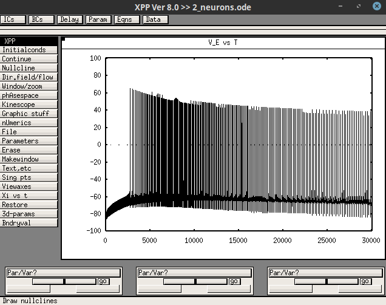
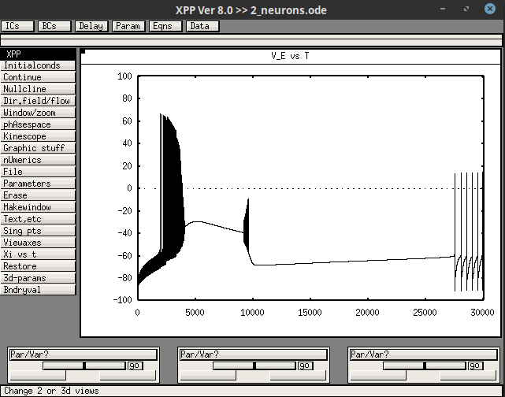
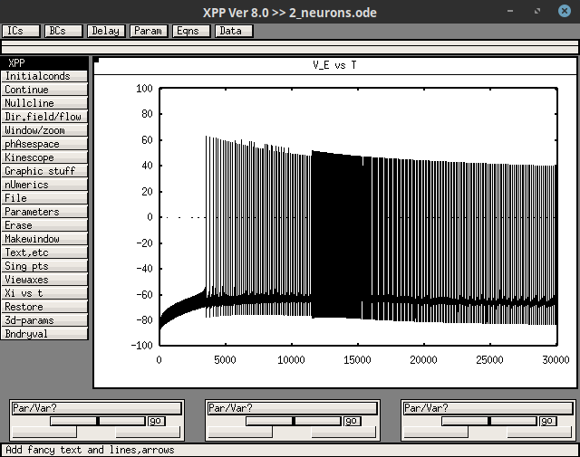

Usage
We give here XPP files corresponding to the simulations shown in Fig 4 and Fig 12 of https://hal.inria.fr/hal-03191275. Initial condition and parameter value files for the different conditions are given in the folders "ic" and "par". From the folder containing "2_neurons.ode", type the commands below in a terminal and then click on "Initialconds", "Go".
Control condition
xppaut 2_neurons.ode -parfile par/control.par -icfile ic/control.ic

FHM-3 mutation of NaV1.1
xppaut 2_neurons.ode -parfile par/migraine.par -icfile ic/migraine.ic

Epilptogenic mutation of NaV1.1
xppaut 2_neurons.ode -parfile par/epilepsy.par -icfile ic/epilepsy.ic
